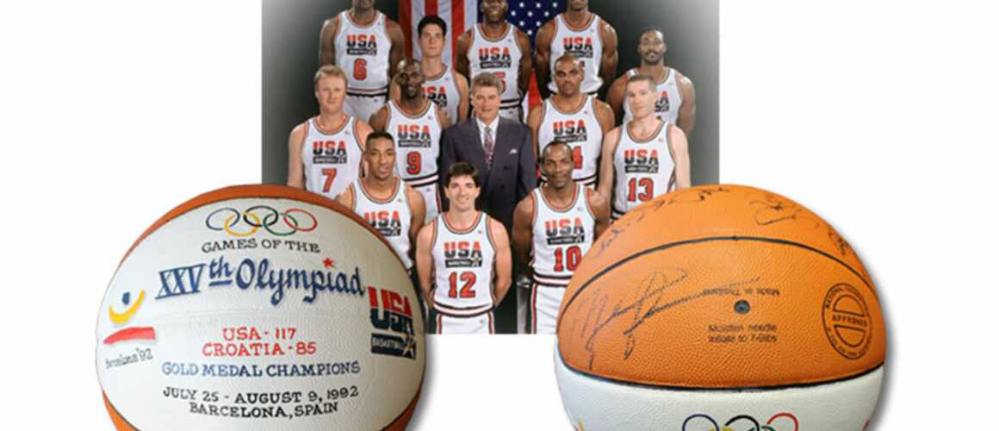

LE BALLON DE LA FINALE DES JO 1992 SIGNÉ PAR LA DREAM TEAM A ÉTÉ VENDU 230 000 DOLLARS !

C’est le ballon de basket le plus cher de l’histoire. 230 041 dollars exactement.
Dimanche, c’est pour ce tarif un peu fou que SCP Auctions a adjugé un ballon utilisé pendant la finale des Jeux Olympiques de 1992 et signé par onze joueurs de la légendaire Dream Team, parmi lesquels Michael Jordan, Magic Johnson et Larry Bird.
Jamais personne n’avait payé aussi cher pour un ballon lors d’une vente aux enchères. Et on doute que ce tarif ait déjà été dépassé dans le commerce.
"UN MORCEAU D’HISTOIRE DU BASKET"
La sphère provenait d’un lot d’objets mis en vente par la famille du défunt Chuck Daly, le coach de cette équipe qui a marqué l’histoire du basket en réunissant quelques-uns des meilleurs joueurs de l’histoire. Personne n’a pu résister à la Dream Team, même pas une superbe équipe de Croatie, battue 117-85 avec ce ballon lors de la finale.
Après des chaussures vendues plus de 70 000 dollars, il semble bien que tout ce que touche Michael Jordan se transforme vraiment en or.